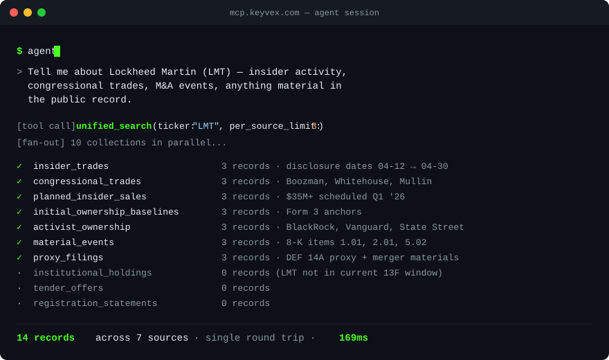

The MCP server for US public financial disclosures.
Two House members — Cisneros and Hoyle — traded Lockheed Martin stock in late 2025. In the same window, insiders filed planned-sale notices and the company lobbied Congress on the defense budget. KeyVex surfaced all of it — trades, insider filings, lobbying, 8-Ks, fundamentals, dark-pool volume — in a single query.
38 tools across 42+ government sources — congressional trades, insider transactions (with option exercises), institutional + mutual-fund holdings (including derivatives), XBRL fundamentals, proxy filings, dark-pool volume, lobbying spend, FARA foreign agents, FEC campaign finance + contributions + independent expenditures, federal contracts + grants, bills, House + Senate roll-call votes, OFAC sanctions, the Consolidated Screening List, Federal Register rules, M&A tender offers, private placements, Treasury auctions, CFTC futures positioning, SEC fails-to-deliver, BLS + FRED + EIA macro & energy data, HHS-OIG exclusions, CFPB complaints, FDA + CPSC product recalls, GovInfo congressional + GAO documents, and more — all queryable by AI agents through one Bearer-authenticated endpoint.
5,000 calls / month free. Paid tiers from $29/mo. No credit card required for preview.
One queryable surface for every public US financial disclosure that matters.
KeyVex normalizes 42+ distinct US public-record sources into a clean Model Context Protocol (MCP) server with 38 agent-native tools. Connect it to Claude, Cursor, your custom agent, or any MCP-compatible client. No scraping, no parsing, no schema-wrangling on your end.
- SEC Form 4Open-market insider trades by officers, directors, and 10%+ holders.
- SEC Form 144Planned-sale notices — insider sells before they happen.
- SEC Form 3Initial-ownership baselines (anchors Form 4 deltas to a starting position).
- SEC 13FQuarterly institutional fund holdings.
- SEC 13D / 13GActivist + passive 5%+ ownership disclosures.
- SEC 8-KMaterial-event filings (M&A, exec changes, earnings, restructurings).
- SEC Schedule TOTender offers — third-party M&A bids and issuer buybacks.
- SEC Form DReg D exempt private placements — VC raises, PE funds, real-estate syndicates.
- SEC Form N-PORTMonthly mutual fund / ETF / closed-end fund portfolio reports.
- SEC Form S-1 / S-3IPO + shelf registration statements (incl. amendments).
- SEC DEF 14A proxy filingsAnnual proxy statements — exec comp, board nominations, shareholder proposals, merger-related votes.
- SEC XBRL fundamentalsIncome statement, balance sheet, cash flow, per-share metrics — quarter by quarter, straight from EDGAR's structured company facts.
- SEC + DOJ + CFTC + OCC + FDIC + FTC enforcementPress releases announcing charges, settlements, indictments, and bank-failure announcements across six regulators.
- USAspending federal contractsFederal contract awards across every agency.
- USAspending federal grantsFederal grant awards across every agency — the grant-side complement to contract awards.
- FEC campaign financeFederal candidates + their linked committees (campaign, PAC, Super PAC, party).
- FEC individual contributionsItemized individual contributions to federal candidates and committees (FEC Schedule A).
- FEC independent expendituresSuper-PAC ad spending for or against federal candidates (FEC Schedule E).
- Senate LDA lobbyingQuarterly lobbying disclosures filed under the Lobbying Disclosure Act.
- Senate eFD PTRsSenator + spouse + dependent stock trades, filed via the Senate eFD portal.
- House Clerk PTRsRepresentative + spouse + dependent trades, filed via the House Clerk.
- Current member catalogEvery sitting senator and representative with full committee + subcommittee assignments.
- Historical legislatorsEvery member who has ever served Congress (1789→present).
- Form 278 annual financial disclosuresNet-worth statements covering members' assets, liabilities, and outside income.
- Congress.gov billsAll 8 bill + resolution types tracked across the current Congress.
- House + Senate roll-call votesEvery recorded vote in both chambers with linked-bill metadata.
- FINRA OTC TransparencyWeekly off-exchange (ATS dark-pool) volume by security and venue.
- OFAC SDN sanctions list19K+ Specially Designated Nationals (Cuba / Iran / Russia / NK / terrorism / narcotics).
- Federal RegisterDaily-published rules, proposed rules, notices, and presidential documents.
- US Treasury auctionsBills, Notes, Bonds, TIPS, FRN — with bid-to-cover ratios, yields, bidder breakdowns, and SOMA holdings (Fed QE/QT visibility).
- BLS + FRED economic indicators50 curated macro series — Fed Funds, Treasury yields, GDP, CPI/PCE, jobs, money supply, Fed balance sheet.
- HHS-OIG exclusions (LEIE)83K+ healthcare entities and individuals barred from federal program payment — compliance flag for contracts and insider activity.
- CFPB consumer complaintsDaily consumer complaints against banks, lenders, credit reporters, and debt collectors — leading indicator for OCC / FDIC / CFPB enforcement.
- SEC N-PORT fund holdingsPer-security mutual-fund + ETF holdings — equities, debt, swaps, options, futures, repos. The first MCP exposure of fund-level derivative books outside Bloomberg.
- FDA recalls (drug + device + food)openFDA recall registry across all three FDA centers, with Class I/II/III severity. Pairs with 8-K / insider trades for product-safety event flagging.
- CPSC consumer-product recallsSaferproducts.gov recall feed — clothing, electronics, toys, batteries, appliances. Includes hazard description, retailer, manufacturer country.
- EIA energy pricesWTI + Brent crude, Henry Hub natural gas, US retail gasoline, US crude production. Energy data unique to EIA (not in BLS or FRED).
- GovInfo legislative + oversightCommittee reports (CRPT), public laws (PLAW), congressional hearing transcripts (CHRG), GAO oversight reports — four collections from the GPO archive.
- CFTC Commitment of TradersWeekly futures-market positioning by trader category — commercial, non-commercial, and spreading — across every reported commodity.
- SEC fails-to-deliverBi-monthly settlement-failure data by security — a short-squeeze and liquidity-stress signal.
- FARA foreign agentsForeign Agents Registration Act filings — every US firm or person registered to act for a foreign government or entity, linked to the foreign principal and its country.
- Consolidated Screening ListTwelve federal export-screening lists (Commerce, State, Treasury) in one feed — Entity List, Denied Persons, Military End User, SDN, and more. 25K+ restricted parties.
Refreshed continuously by autonomous schedulers. No human in the loop.
One tool call. Every source that matters.

Live demo · unified_search(ticker:"LMT") fanning out across the disclosure surface in one round trip.
Most financial-data APIs give you one narrow view. KeyVex's tools are
designed to chain — and the unified_search tool shown above
does the chaining for you. When you want to drive the chain manually, the
same composition is just as natural:
Agent: get_congressional_trades(ticker:"LMT", since:"2026-01-01")
→ 23 trades by senators and reps in Lockheed Martin stock
Agent: get_member_profile(bioguide_id:"<each trader's id>")
→ party, state, committees — including who sits on Armed Services
Agent: get_roll_call_votes(legislation_type:"HR", since:"2026-01-01")
→ defense-related bills those members actually voted on
Agent: get_federal_contracts(recipient_name:"Lockheed Martin", since:"2026-01-01")
→ 1,247 LMT contracts awarded by DoD
Agent: get_fundamentals(ticker:"LMT", category:"income_statement")
→ LMT's actual revenue + operating income trend, quarter by quarter (XBRL)
Agent: get_lobbying_filings(client_name:"Lockheed Martin", filing_year:2026)
→ LMT's lobbying spend, what issues, what agencies contacted
Agent: get_proxy_filings(ticker:"LMT")
→ exec comp + board nominations + shareholder proposals
Agent: get_insider_transactions(ticker:"LMT")
→ insider buys/sells from the company's officers + directors
Agent: get_enforcement_actions(text:"Lockheed")
→ any SEC / DOJ / CFTC / OCC / FDIC actions involving LMT
Agent: get_economic_indicators(category:"rates", latest_only:true)
→ Fed Funds + 10Y Treasury + mortgage rate context (FRED)
Agent: get_treasury_auctions(security_type:"Note", since:"2026-01-01")
→ bond-market sentiment / demand backdrop
Agent: get_fec_candidate_profile(candidate_name:"<member name>")
→ that member's FEC candidate ID + principal campaign committee
Twelve separate disclosure sources, joined by
ticker + bioguide_id +
recipient_name + company name. Triangulation that takes a
Bloomberg terminal and an analyst — fundamentals from a separate
provider — and a macro data subscription on top, all combined into a
single AI agent conversation in a few seconds.
Or in one tool call:
Agent: unified_search(ticker:"LMT", per_source_limit:5)
→ fans out to 10 collections in parallel
→ returns one envelope grouped by source —
insider_trades, congressional_trades, planned_insider_sales,
activist_ownership, material_events, otc_market_weekly, ...
→ sub-second response across the full disclosure surfaceNo other MCP server exposes this combined surface today.
Connect in under five minutes.
KeyVex is a stateless Streamable HTTP MCP server. Authentication is a
Bearer token in the Authorization header. That's it.
Endpoint
https://mcp.keyvex.comHealth check (no auth required)
curl https://mcp.keyvex.comList the 38 tools (auth required)
curl -X POST https://mcp.keyvex.com \
-H "Authorization: Bearer <your-key>" \
-H "Content-Type: application/json" \
-H "Accept: application/json, text/event-stream" \
-d '{"jsonrpc":"2.0","id":1,"method":"tools/list","params":{}}'Call a tool (e.g. dark-pool flow for NVDA)
curl -X POST https://mcp.keyvex.com \
-H "Authorization: Bearer <your-key>" \
-H "Content-Type: application/json" \
-H "Accept: application/json, text/event-stream" \
-d '{
"jsonrpc":"2.0","id":2,"method":"tools/call",
"params":{
"name":"get_otc_market_weekly",
"arguments":{"issue_symbol":"NVDA","sort_by":"total_notional_sum","limit":10}
}
}'
From Claude Desktop: add KeyVex to your claude_desktop_config.json
as a remote MCP server with your Bearer token. One-click install through
Anthropic's MCP directory once review completes.
Pay for what you actually use.
Generous free tier. Hard quotas, no overage charges. Same data freshness at every tier — the only difference is monthly call quota and support response time.
| Hacker | Builder | Pro | Enterprise | |
|---|---|---|---|---|
| Price | Free | $29/mo | $199/mo | Custom |
| API calls / month | 5,000 | 50,000 | 500,000 | Unlimited |
| All 38 tools | ✓ | ✓ | ✓ | ✓ |
| Same data freshness | ✓ | ✓ | ✓ | ✓ |
| Support | Community | Email (48h) | Priority email (24h) | Dedicated + SLA |
| Custom rate limits | — | — | ✓ | ✓ |
| Annual discount | — | $290/yr (2 mo free) | $1,990/yr (2 mo free) | Custom |
When you hit your monthly limit, requests are politely rejected until the next month or you upgrade. No surprise bills.
Built for the people building tools.
KeyVex isn't a dashboard. It isn't a stock-picker. It's data infrastructure for the people building the next generation of financial-research tools and AI agents.
You'll like KeyVex if you're:
- An indie dev building an AI agent that reasons over public financial disclosures
- A hedge fund, asset manager, or family office that wants every public-disclosure surface piped into your research workflow
- A fintech firm, prop shop, or trading desk that needs clean, normalized SEC and congressional data without standing up your own scraping pipeline
- A compliance, legal, or risk team that needs every record traceable back to its source-of-record filing for audit and review
- An investment-bank research desk or sell-side analyst who wants the full disclosure surface in one query instead of ten browser tabs
- A quant researcher prototyping signals across multiple disclosure sources
- A product team adding regulatory-data context to an AI assistant or internal copilot
- An academic studying insider trading, congressional behavior, or market structure
KeyVex is probably not for you if you want:
- A pretty web dashboard with charts
- Real-time intraday market data (we cover disclosed trades, not live exchange feeds)
- Trading signals or buy/sell recommendations
- Pre-built backtests (we're the data layer; you build on top)
Built for production agents, not prototypes.
The plumbing behind the response is what separates infrastructure from an experiment. KeyVex runs autonomously, returns audit-grade provenance on every record, and is indexed for the cross-source queries agents actually compose — not just the easy single-collection ones.
Indexed for real queries
Cross-cutting filters — (politician × ticker × date),
(ticker × buy/sell × date), (filer × concentration),
(agency × NAICS × date) — each have dedicated composite
indexes. The political-alpha query ("did senator X trade ticker Y
before bill Z?") returns sub-second on a single MCP call. No fan-out
to multiple endpoints. No client-side join.
Audit-grade provenance
Every record carries a source_url (or analogous field)
pointing back to the canonical filing on EDGAR, eFD, House Clerk,
USAspending, OFAC, FEC, Federal Register, or wherever it originated.
No black-box transformations. Every claim your agent makes is one
link from the primary source — exactly what compliance review needs.
Idempotent & autonomous
40+ scheduled scrapers run on cron — Form 4 every 30 min, 8-K hourly,
congressional PTRs daily, full bioguide catalog weekly. Writes use
merge:true semantics, so re-runs don't duplicate.
Network blips trigger bounded retries. The warehouse fills itself in
continuously without human intervention.
Pure-publisher posture. Public-record data only.
KeyVex takes the raw, fragmented data that US government repositories publish — SEC EDGAR XML, House Clerk PDFs, Senate eFD HTML behind a CSRF gate, USAspending JSON, FINRA's paginated APIs, and a dozen more — and presents it clean, normalized, and ready to use. Parsed, ticker-resolved, schema-unified, idempotent — shaped for your agent to query directly. What we don't add on top is derived signals: no trading recommendations, no investment advice, no scoring or ranking of securities, no claims about future performance.
Source-faithful, byte-exact, auditable. We don't
silently alter what SEC published either. Sentinels, filer typos,
the full set of source-side quirks — preserved byte-for-byte.
Conventions are explained in each tool's description; a
source_metadata block annotates the quirks at read
time so your agent reads them correctly. Audit any KeyVex
record against EDGAR — the bytes match.
This isn't a marketing distinction — it's a deliberate legal posture (Lowe v. SEC, 1985) that keeps KeyVex cleanly outside investment-advisor territory. We do the data work; what you build on top of it is yours.
FAQ
How fresh is the data?
Most sources update within hours of being filed. SEC Form 4 (insider trades) within 30 minutes. 8-K material events hourly. Congressional PTRs daily at 6 AM ET. Lobbying disclosures daily. Quarterly filings (13F, lobbying) on their natural cadence with sub-day latency once filed.
Where does the data come from?
Official US government sources only — SEC EDGAR (Form 4 / 144 / 3 / 13D-G / 13F / 8-K / D / N-PORT / S-1 / S-3 / Schedule TO / Form 278 / DEF 14A / XBRL fundamentals / fails-to-deliver), USAspending.gov (contracts + grants), Senate eFD, House Clerk Office, Senate LDA, the unitedstates/congress-legislators public catalog, api.congress.gov + senate.gov (bills + House & Senate roll-call votes), api.open.fec.gov (campaign finance + contributions + independent expenditures), efile.fara.gov (FARA foreign-agent registrations), FINRA OTC Transparency, CFTC Commitment of Traders, openFDA + CPSC (product recalls), GovInfo (congressional + GAO documents), US Treasury (auctions + OFAC), api.trade.gov (Consolidated Screening List), federalregister.gov, BLS + EIA economic data, FRED (Federal Reserve Economic Data), HHS-OIG (LEIE exclusions), CFPB consumer complaints, and SEC + DOJ + CFTC + OCC + FDIC + FTC press release feeds. All public-record data. No paid data partnerships, no scraped paywalled content.
Is the data delayed for the free tier?
No. All tiers get the same data freshness. Tiers differ only in monthly call quota and support response time.
Can I get historical data?
We currently keep recent windows of each source in our queryable warehouse. Deeper historical backfills (multi-year) for specific tickers or agencies are an Enterprise-tier conversation — contact us.
What happens if I exceed my call quota?
Requests are rejected with a 429 response until your quota resets at the start of the next month, or you upgrade. We don't auto-bill overages — no surprises.
How do I cancel?
Self-serve cancellation from your account page. No phone calls, no retention specialists. Cancellation takes effect at the end of your current billing period.
Do I need a credit card to try the free tier?
No. Email signup, get an API key, start querying. Credit card only required for paid tiers.
Is there an SLA?
Best-effort uptime for Hacker / Builder / Pro tiers — we run on Google Cloud Functions Gen 2 with autonomous failover, but no formal SLA. Enterprise tier includes a contractual uptime commitment.
Can I self-host or get an export?
Not currently. Enterprise customers can discuss custom-deployment options.